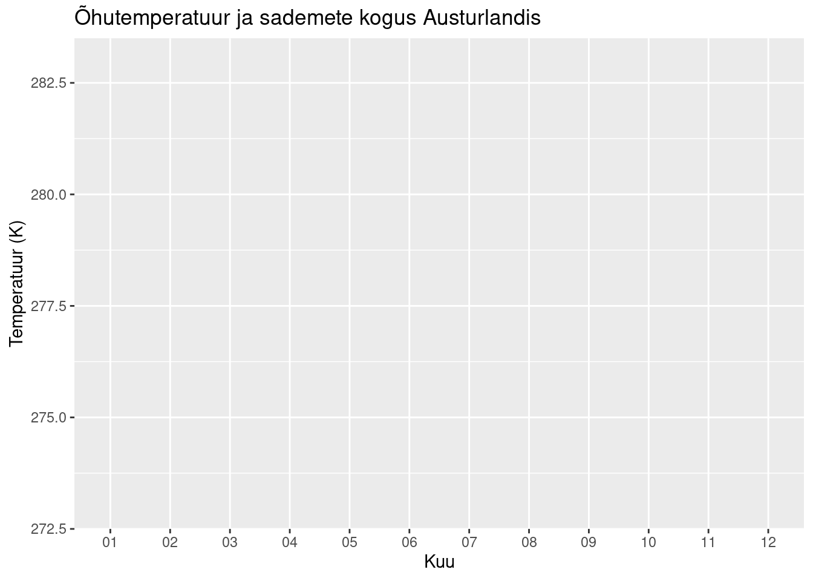

library(tibble)
dailyMeans = data.frame("Kuu" = c("01", "02", "03", "04", "05", "06", "07", "08", "09", "10", "11", "12"), "Temperatuur" = c(1.24, 1.29, 1.28, 2.42, 4.89, 8.09, 9.69, 9.64, 7.81, 4.94, 2.34, .44), "Sademed" = c(142.54, 157.05, 96.66, 93.23, 62.75, 48.42, 73.1, 100.87, 152.51, 136.85, 116.54, 144.2))
dailyMeans[c("Temperatuur")] = lapply(dailyMeans[c("Temperatuur")], function(dailyMean) {
dailyMean + 273.15
})
dailyMeans## Kuu Temperatuur Sademed
## 1 01 274.39 142.54
## 2 02 274.44 157.05
## 3 03 274.43 96.66
## 4 04 275.57 93.23
## 5 05 278.04 62.75
## 6 06 281.24 48.42
## 7 07 282.84 73.10
## 8 08 282.79 100.87
## 9 09 280.96 152.51
## 10 10 278.09 136.85
## 11 11 275.49 116.54
## 12 12 273.59 144.20library(ggplot2)
chart = ggplot(data = dailyMeans, aes(x = Kuu, y = Temperatuur))
chart +
labs(title="Õhutemperatuur ja sademete kogus Austurlandis", x = "Kuu", y = "Temperatuur (K)")+
scale_y_continuous(limits = c(273, 283))
library(plotly)##
## Attaching package: 'plotly'## The following object is masked from 'package:ggplot2':
##
## last_plot## The following object is masked from 'package:stats':
##
## filter## The following object is masked from 'package:graphics':
##
## layoutplotly::plot_ly(dailyMeans, x = ~Kuu, y = ~Temperatuur, type = "bar", name = "Temperatuurid", text = ~Temperatuur) %>%
add_trace(x = ~Kuu, y = ~Sademed, type="scatter", mode = "lines", yaxis = "y2", name = "Sademeid") %>%
add_text (y = dailyMeans$Sademed, yaxis = "y2", text = ~Sademed, showlegend = FALSE) %>%
layout(yaxis = list(range = c(273, 283), title = "Temperatuur (K)"), yaxis2 = list(range = c(0, 160), overlaying = "y", side = "right", title = "Sademed (mm)"))